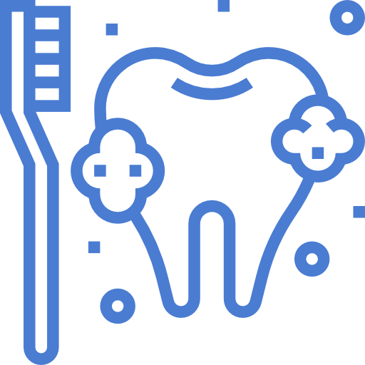

Protetyk z dojazdem do domu Poznan
- Strona glowna
- Wizyty domowe
Gdy wizyta w pracowni jest wyzwaniem - przyjedziemy do Ciebie
Rozumiemy, ze dla niektorych pacjentow podroz do pracowni moze byc duzym wyzwaniem. Problemy z poruszaniem sie, stan zdrowia po zabiegach czy po prostu trudy logistyczne - to wszystko moze utrudniac dostep do profesjonalnej opieki protetycznej.
Dlatego to my przyjedziemy do Ciebie, zapewniajac ten sam, wysoki standard opieki w zaciszu Twojego domu. Brak mozliwosci dojazdu nie jest juz bariera w dostepie do profesjonalnej opieki protetycznej.
Zapytaj o wizyte domowaporozmawiajmy o potrzebach Twoich bliskich

Dla kogo przeznaczona jest usluga wizyt domowych?
- Dla seniorow i osob o ograniczonej mobilnosci, dla ktorych podroz jest duzym wysilkiem
- Dla pacjentow lezacych, przewlekle chorych lub w okresie rekonwalescencji
- Dla mieszkancow domow opieki i placowek leczniczych
- Dla wszystkich, ktorzy cenia sobie maksymalny komfort, dyskrecje i indywidualne podejscie w znanym sobie otoczeniu

Pelen zakres uslug protetycznych bez wychodzenia z domu

Bezplatne konsultacje i porady
Pierwsza wizyta moze miec charakter konsultacyjny. Ocenimy stan uzebienia, doradzimy najlepsze rozwiazanie i przedstawimy plan leczenia wraz z kosztorysem.
Pobieranie wyciskow pod nowe protezy
Dysponujemy profesjonalnym, przenosnym sprzetem, ktory pozwala na precyzyjne pobranie wyciskow w kazdych warunkach, z zachowaniem pelnej higieny i komfortu pacjenta.
Naprawa i korekta istniejacych uzupelnien
Wiele drobnych napraw i korekt (np. uszczelnienie luznej protezy) mozemy wykonac podczas jednej wizyty.
Dopasowanie i oddanie gotowej protezy
Finalne dopasowanie nowej protezy odbywa sie w domu, co pozwala na idealne dostosowanie jej w naturalnym dla pacjenta srodowisku.
Jak umowic wizyte domowa? Prosty proces w 3 krokach
Kontakt telefoniczny
Zadzwon do nas. Podczas krotkiej rozmowy zapytamy o stan pacjenta, jego potrzeby i adres. Wspolnie ustalimy dogodny termin wizyty.
Wizyta specjalisty
Nasz protetyk przyjedzie w umowionym terminie z calym niezbednym, sterylnym sprzetem. Z pelnym szacunkiem i cierpliwoscia przeprowadzimy konsultacje lub zabieg.
Realizacja i dalsza opieka
W zaleznosci od potrzeb, wykonamy usluge na miejscu lub rozpoczniemy proces tworzenia nowej protezy, informujac o kolejnych etapach.
Bezpieczenstwo i profesjonalizm - Twoj spokoj jest naszym priorytetem
Rygorystyczne zasady higieny
Stosujemy rygorystyczne zasady higieny i sterylizacji, uzywajac jednorazowego sprzetu tam, gdzie to mozliwe.
Nowoczesny, przenosny sprzet
Dysponujemy nowoczesnym, przenosnym sprzetem, ktory gwarantuje taka sama jakosc uslug jak w pracowni.
Wieloletnie doswiadczenie
Nasz specjalista ma wieloletnie doswiadczenie w pracy z pacjentami starszymi i o szczegolnych potrzebach.

Zapewnij swoim bliskim najlepsza opieke - bez stresu i wysilku
Masz pytania? Chcesz dowiedziec sie, czy mozemy pomoc w Twojej konkretnej sytuacji? Zadzwon do nas. Z przyjemnoscia i bez zadnych zobowiazan odpowiemy na wszystkie Twoje watpliwosci.
Umow wizyte domowa